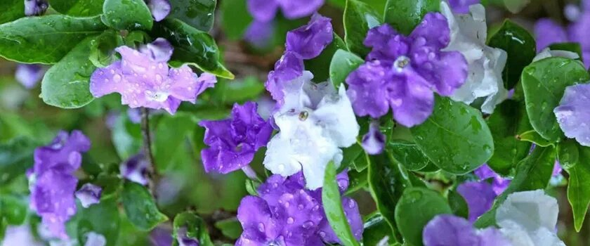

Вся подробная информация о вашей незабываемом путешествии в джунгли в этом разделе
Santuario – это одно из мест в амазонских джунглях, в которых мы проводим программу Transformation.
Мы выбрали это место потому, что это уникальная обстановка, не похожая ни на какую другую в мире, это
кипящий источник Шанай-Тимпишка, это 1 час пешком через джунгли и 30 минут на лодке до ближайшего
населённого пункта.
Ниже написаны инструкции, которые помогут Вам подготовиться к этому ретриту.
Пожалуйста, ознакомьтесь с информацией, чтобы учесть все нюансы.
Предварительная консультация перед программой.
В-первую очередь Вам необходимо провести беседу с интеграционным тренером. Это разговор, в котором мы
получим предварительную информацию о Вас, Ваших задачах, Вашей индивидуальной ситуации, а Вы –
предварительные ответы на оставшиеся вопросы программы и поездки.
Это бесплатный разговор, который предполагает диагностику и консультацию в одном процессе. Записаться на
разговор можно здесь.
Если хотите получить индивидуальную работу с интеграционным тренером, пожалуйста, ознакомьтесь с условиями
данного взаимодействиями здесь.
Santuario – это амазонский центр растительной медицины, которым управляет маэстро и его семья.
Основной язык общения - испанский.
Центр расположен на частном проекте по сохранению в тропических лесах и не доступен для дорог.
Несмотря на то, что добраться до конечной точки можно самостоятельно (совершив пеший проход
через джунгли в течение часа), это не рекомендуется, и участники могут потеряться или
столкнуться с некоторой неудачей в пути.
Наша программа оснащена гидом, переводчиком и трансфером багажа через джунгли.
Дорога в джунгли
Путешествие в Santuario само по себе является эко-приключением! Продолжительность около 3-х
часов, в зависимости от дорожных условий. Включает экскурсию по проселочным дорогам, прогулку на
лодке на традиционном деревянном каноэ по реке Пачитея и часовую прогулку к по тропическому
лесу.
Пожалуйста, убедитесь, что Вы находитесь в хорошей физической форме для этой прогулки.
Сообщайте Проводникам, если Вы испытываете трудность в передвижении.
Возьмите воду и головные уборы, так как солнце может быть активным.
Диетические ограничения
Пожалуйста, начните упрощать свою диету, по крайней мере, за две недели до даты ретрита.
Свяжитесь в тренером по интеграции для получения инструкций подготовки к программе.
Резиновые сапоги, пончо от дождя, средство от комаров, фонарик, запас батареек, бутылку для
воды. Это некоторые предметы первой необходимости.
В Santuario нет электричества, сотовой связи и интернета. Имеются солнечные батареи для
обеспечения центра самым необходимым, а также светом для вечернего времени суток. Ближайший
доступ к интернету и электричеству находится в соседней деревне, Honoria. И в случае
чрезвычайной необходимости, Вас сопроводят для доступа к этим ресурсам.
Полный перечень рекомендованных вещей и принадлежностей смотрите здесь.
Прививки
Мы не можем дать прямой совет относительно прививок, но Santuario не является сильной малярийной
зоной.
Тем не менее, во время дождливой погоды (или сезона дождей), «жёлтая лихорадка» может
присутствовать. Многие правительства требуют, чтобы Вы делали прививки от желтой лихорадки и
предъявляли во время таможенного контроля в страну прибытия.
Пожалуйста, проконсультируйтесь с интеграционным тренером о состоянии Вашего
здоровья перед принятием решения участия в программе.
Условия проживания
Будьте готовы к естественной природе и простоте тропического леса. Центр расположен вне
информационной сети и построен в традиционном стиле из дерева и пальм.
Каждому предоставляется личная комната, кровать, постельное белье, полотенце и противомоскитная
сетка. Есть индивидуальные и общие туалеты. Вода для душа собирается непосредственно из кипящей
реки.
«Тамбо» или изолирующие хижины предоставляются индивидуально, согласно пути индивидуального
человека и как часть трансформационной программы.
Хотя мы обходим сезон дождей и предусматриваем благоприятные погодные условия для дат ретрита,
обратим Ваше внимание:
Из-за естественной окружающей среды на участке, он может быть подвержен непредвиденным стихийным
обстоятельствам, таким как сильный ветер или мощный тропический дождь.
Это может повлиять на сантехнику и другие удобства жизни. Мы делаем всё возможное, чтобы опыт в
джунглях произошёл максимально благоприятно.
Питание
Еда очень проста в соответствии с диетой растениями и требований аяваски.
В основном вегетарианская, без глютена и лактозы.
Веганская и сыроедческая еда также предпочтительна, если Вы веган или сыроед.
Если Вам необходимо, то в рационе могут быть несколько яиц и иногда рыба. Можно привнести
какие-то особенные продукты, если они соответствует режиму диеты и будет одобрена интеграционным
тренером.
Вода
Семья Santuario пьет воду прямо из кипящей реки, а также использует ее для купания и
приготовления пищи. Тем не менее, если у Вас есть особые предпочтения к воде, Вы можете взять с
собой бутылку с фильтром.
Работа с амазонскими растениями (Master Plants).

Амазонские растения являются мощными лечебными средствами, но должны рассматриваться как
экспериментальные и использоваться как часть общего плана лечения. Вы несете ответственность за
собственное исследование, чтобы выявить все преимущества, потенциальные риски и противопоказания
при работе с этими растениями.
Аяваска и амазонские растительные лекарства могут усугубить некоторые заболевания. Пожалуйста,
сообщите интеграционному тренеру о существующих заболеваниях или расстройствах организма и
психики.
Церемония аяваски. Время и место
Церемонии аяваски проходят с 20:00 в «малоке» (церемониальный круглый дом).
Церемония длится около 4-6 часов.
Описанные далее правила учитывает Маэстро и Проводники, но Вы должны быть проинформированы:
Рекомендуется начинать с трети или не более половины чашки аяваски, чтобы дать организму
адаптироваться к новому для него составу растений.
Пожалуйста, не покидайте церемонию до ее окончания. Хотя пик ощущений длится около четырех
часов, некоторые эффекты могут продолжаться до утра. Проводники обеспечат Вам безопасный опыт, и
в случае необходимости в туалет или дополнительных принадлежностей – сопроводят Вас в нужном
направлении.
После церемонии и ретрита
Маэстро, интеграционный тренер и проводники подскажут, что Вам нужно сделать в отношении
пост-диеты. Важно, чтобы Вы придерживались этих предписаний для собственного благополучия.
Рекомендуется обратиться к интеграционному тренеру или проводнику, чтобы помочь вам в
прохождении вашего опыта. Обратите внимание, что интеграция является огромной частью
целительного опыта
Пожалуйста, будьте предельно осторожны вокруг кипящей реки. Не выходите на скалы и не гуляйте в
тропическом лесу без присмотра. Всегда носите ботинки вне жилых помещений.
Пожалуйста, уважайте частную жизнь и потребность в мире и уединении других участников. Работа с
растительной медициной - дело деликатное.
Пожалуйста, имейте в виду, что Ваша личная безопасность и безопасность Ваших вещей – это Ваша
ответственность. Пожалуйста, сообщите близкому члену семьи или другу информацию о Вашей поездке.
Уважение к окружающей среде
Мы прилагаем все усилия, чтобы добиться правовой защиты этих священных земель и термальных рек.
Пожалуйста, не оставляйте мусор на месте и используйте экологически чистые продукты. Мы
приветствуем тех, кто заинтересован в сохранении и защите этих земель.
Погода
Часто может идти дождь, и погода может быть влажной и жаркой, присущей тропическим лесам.
Зимой, с декабря по март, может быть очень влажно, а дороги могут быть затоплены. Пожалуйста,
подготовьтесь соответственно.
Будут комары! Резиновые сапоги являются необходимостью (Вы их без трудностей сможете приобрести
в Пукальпе).
Подарки
Подарки не ожидаются, но если Вы хотите принести подарки, особенно ценятся табак,
книжки-раскраски, фонарики, солнечные гаджеты, игры и художественные принадлежности. У маэстро 5
детей (от 4-х до 15 лет), поэтому они будут только рады Вашей инициативе.
Подробнее об этом также расспросите у Интеграционного тренера.
Платежи и баланс Вашего ретрита
Оплата участия в программе производится после подтверждения Интеграционным тренером возможности
Вашего участия. Которое в свою очередь происходит после заполнения Опросника участника ретрита.
Вы вносите 500$ регистрационного взноса, после чего за Вами закрепляется место в программе.
Остаток суммы Вы вносите наличными деньгами Проводникам, при встрече Вас в г. Пукальпе в Перу.
Регистрационный взнос Вы можете совершить путём перевода Western Union или банковским переводом
на карту Visa / MasterCard.
Пожалуйста, перейдите по этой ссылке для получения инструкций по переводу: www.santuariohealing.com/retreat-payment/
Остались вопросы?
Хотите участвовать в ретрите?
Посетите страницу «Часто задаваемые вопросы», чтобы получить на них ответы.
Или оставьте заявку на предварительное интервью с интеграционным тренером.
Оставьте заявку на предварительное интервью с интеграционным тренером
Тебе нужно больше
информации об аяваске?
Хочешь знать больше об особенностях её действия и правилах, которые следует соблюсти?
Введи e-mail ниже и получи книгу на почту
Получи книгу
бесплатно
Книга, написанная интеграционными тренерами программы Transformation
«Аяваска. Инструкции для путешественника и проводника на понятном языке. Пошаговое руководство
подготовки к опыту, навигации в процессе, и интеграции опыта в жизнь»
Получить бесплатно на e-mail
Записаться на
предварительное интервью
Мы уточним:
О состоянии Вашего здоровья
О задачах, которые Вы хотите решить и целях, которые хотите достичь
О деталях предстоящего опыта и нюансах, которые следует учесть.
О вопросах, которые у Вас имеются по поездке.
Получить консультацию
Мы предоставляем платные консультации, связанные с психоделическим опытом.
Стоимость – 50$ в час.
Консультации проходят в формате разговора в WhatsApp. Вам необходимо
предварительно написать тему и конкретику предстоящего разговора.
После получения информации, мы свяжемся с Вами, чтобы уточнить детали и предложить день и время
предстоящего разговора.